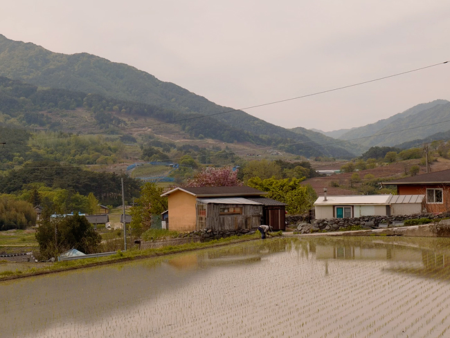

Recueil
Documentaire interactif
Expérience interactive de notre film documentaire sur la ruralité sud-coréenne
En collaboration avec l'université Dong-Eui de Busan
2026
Voir le projetContexte
Recueil est un projet en deux dimensions : un film documentaire de 30 minutes sur la ruralité sud-coréenne, et une expérience interactive sur le web qui prolonge le film.
Le film explore ce qu'est la ruralité en Corée du Sud aujourd'hui : ses réalités, son déclin démographique, et si elle existe encore vraiment. Il prend pour ancrage le village de Sannae-Myeon et le temple bouddhiste Silsangsa, autour duquel gravite la communauté de l'Indra's Net, une communauté bouddhiste dont on questionne le rôle dans le maintien de la vie rurale.
Sur le site, l'utilisateur peut choisir de regarder le film directement, ou de vivre l'expérience interactive : une carte divisée en deux chapitres, où chaque zone cliquable emmène vers le visionnage d'une partie du film, suivie d'une page annexe qui enrichit le propos avec des données, des chiffres et des éléments contextuels. Une façon d'aller plus loin que le film seul.
Nous étions une équipe de 7 étudiants français et 4 étudiantes coréennes.
→ J'étais en charge du design du site et des illustrations.
J'ai également chapeauté le développement du site, et assuré une partie de la prise de son lors du tournage.

Trois semaines en Corée du Sud
Avant le départ, l'équipe a mené des recherches pour choisir le sujet et comprendre les enjeux de la ruralité sud-coréenne, ce qui a orienté le choix de Sannae-Myeon et du temple Silsangsa comme ancrage du film. Le voyage lui-même s'est déroulé sur trois semaines, avec la majeure partie du temps basée à l'université Dong-Eui de Busan, pour la pré-production, la post-production et le développement du site.
Quatre jours ont été consacrés au tournage sur place. La barrière de la langue était réelle. Entrer en contact avec les membres de la communauté de l'Indra's Net, obtenir leur accord pour filmer, trouver des moments de spontanéité, tout cela demandait du temps, de la patience et de l'écoute. On a fini par partager un repas au temple avec eux, un moment qui est pour moi l'un des plus forts du projet.

Design et illustrations
Le design du site a évolué en parallèle du montage du film : les deux se nourrissaient mutuellement. La direction artistique s'est affinée au fil des rushes, des intentions éditoriales, de ce que le film devenait vraiment.
J'ai réalisé toutes les illustrations du site, dont la carte dessinée à la main représentant la région de Sannae-Myeon, retravaillée en SVG cliquable pour naviguer dans le webdocumentaire.
Le site intègre également un système multilingue FR/EN/KR et un son ambiant pour prolonger l'immersion au-delà du film.
Ce que j'en retiens
Ce projet a été une expérience hors du commun : trois semaines en Corée du Sud, à documenter un sujet que je ne connaissais pas, dans une langue que je ne parle pas.
Ce que je retiens professionnellement, c'est la capacité à concevoir dans l'incertitude. Le design, les illustrations et le site ont dû s'adapter en continu à un film qui se construisait en même temps.